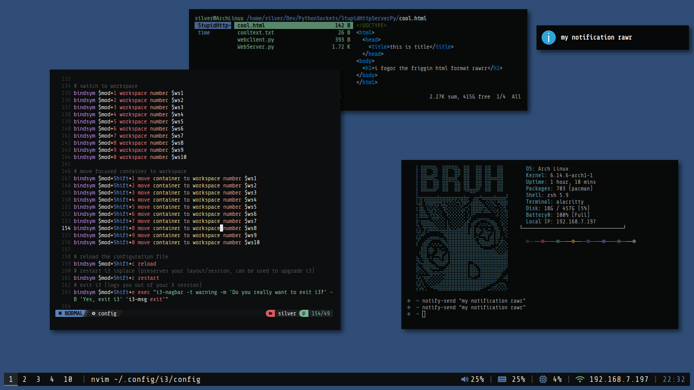

how to customize your linux desktop
Ricing is an art, you wanna learn this art. You see those cool reddit posts, or your nerd friend or perhaps PewDiePie and want your setup to look like that, then fear not! You are at the rice (pun intended) spot!
Wait wait wait hold on.... What is Ricing? Ok so a bit of history : this term comes from customizing cheap jdm cars to make them look faster. Here it refers to making your setup look aesthetically pleasing.
If you are new to ricing (and linux in general as I assume), you may need something you can rice. Most posts on reddit are about riced window managers, hence here too I'll cover how to rice window managers. What is a window manager? It is exactly what the name says : manage windows. These are different from desktop environments like KDE Plasma, Gnome, XFCE, Cinnamon etc. Window managers are a bit more bare-bones. (btw in wayland, these are called compositors and compositing managers, not window managers.)
What is this xorg and wayland you speak of?..... These are display protocols. If you don't know which one to pick, just use Wayland, as it is new and currently mainstream. There is a very good chance that you are in a Wayland environment. Read more about it here. Most of this guide will be wayland focused.
Just pick one! My own recommendation would be Niri.
A lof of ricing will start from terminals. Here are some terminals that I have used, and these are the only terminals I have extensively used, not really a 'best terminal emulator' list.
Why is image rendering in terminal important?... It's not, but you can things like previewing images in TUI file managers (like ranger and yazi), show images in fetch output and do other cool stuff like reading manga in a terminal!
Bars mentioned above are fairly simple and may not suite needs of some of you, who doesn't want a nice dashboard, custom bar, control panel, network widget, music & notifications and a lot more!
NOTE: Among the above, I have only used Eww, AGS and AwesomeWM. I would recommend AGS as it is more batteries included and typescript is easier. AwesomeWM is the way to go if you also want a window manager.
Its not a rice unless you use a fetch tool. A cool ascii art and system info in terminal makes you look like a hacker man (/j). There are a ton of them around, like FastFetch, Neofetch, BunnyFetch, and my own work in progress fetch tool (shilling myself) written in assembly - FetchASM. You can try writing your own fetch tool, its fairly simple and a fun way to learn more linux!
Here I will lay down some steps you can follow when ricing, these are not hard and fast rules but certain guidelines or checklist that you can follow, they don't need to be done in the exact order either, you can do step 2 before 3 if you want to!
Before you actually start ricing, have a reference, an idea or an image in your head that you want to replicate. This is helpful as the brain doesn't just create ideas out of thin air. Look at some rice, like google "awesomewm rices", "eww linux rices". This will help you keep a certain goal in mind. As you get better, you will not need references and will be able to create more "orignal" rices.
Example reference: (an old rice of mine)
When looking at a reference take notes of the bar style, window style, window decorations(titlebars), custom widgets, colors, background wallpaper, font, and other effects like shadows, blur etc.
(In this rice, I am usin Hyprland with double border plugin, and AGS as my bar and music widget, the color palette is gruvbox)
NOTE: This step is very important, it can save you a lot of time. Instead of asking others "what should I add?" you will already know what to add.